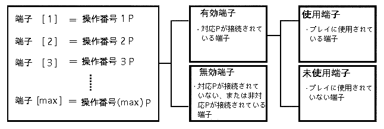

Return to menu | Go to next page
| Term | Description | Notation |
|---|---|---|
| Supported input peripherals | An input peripheral that can be used in an application. | Supported P |
| Unsupported input peripheral | -Cannot be used in certain applications. An input peripheral (not supported). | Unsupported P |
| Peripherals used | -P corresponding to the actual play (corresponding P connected to the terminal used). | Use P |
| Main unit terminal | ・ Two input terminals of the main unit. The two input terminals of the main body are called “main body terminal 1” and “main body terminal 2”, respectively. | Main unit n |
| terminal [n] | -When the number of terminals is expanded by the multi-terminal 6, numbers are assigned to the terminals left-justified and referred to as “terminal [n]” (n is a number). (Varies depending on multi-terminal connection status) |
"Terminal [n]" |
| Effective terminal | -Terminal to which the corresponding input peripheral is connected. | Effective terminal |
| Terminal used | -Terminal used for actual play. It is determined for each game play from the valid terminals. | Used terminal |
| Unused terminal | -Terminal not used for actual play. | Unused terminal |
| Invalid terminal | -A terminal that is not valid. | Invalid terminal |
| Operation number | -Player number. (1P, 2P ...). There is a one-to-one correspondence between operation numbers and terminals used |
1P ~ nP |
| User pause | -Pause by player operation (press start button). | |
| System Pause | -Pause by the system (application). It is accompanied by a warning display. This is called in order to distinguish it from the pose process (user pose) by player operation. |

* Terminals and operation numbers correspond one-to-one.
The terminals are divided into valid terminals and invalid terminals depending on whether or not the corresponding P is connected.
∙ Effective terminals are divided into used terminals and unused terminals depending on whether they are used for play.
Refer to “Figure 1-1: Transition diagram of terminal states” (described later).